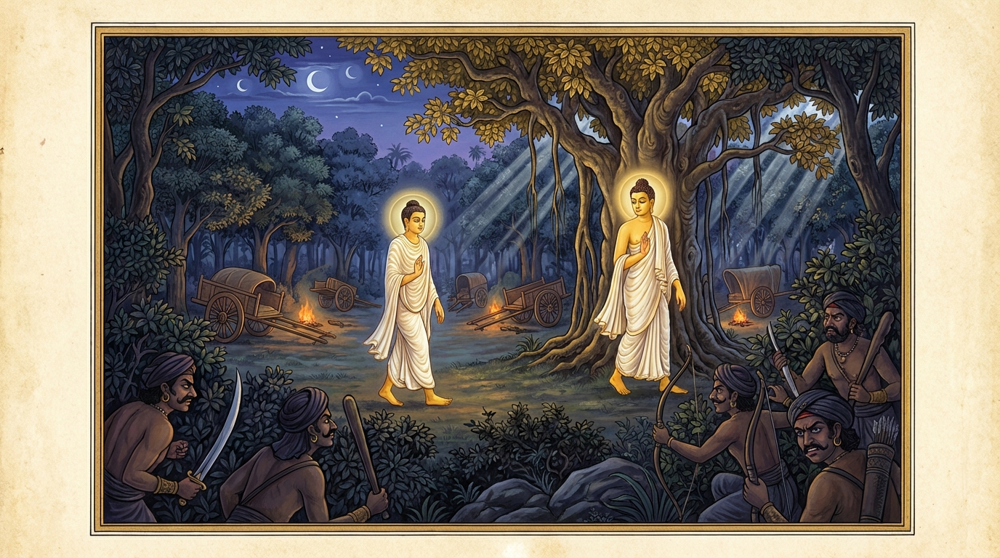

6. අසංකිය ජාතකය (76)
“අසඞ්කියොම්හි ගාමම්හි” (ගම්හි සැක නැත්තෙමි) යන මේ ජාතක කතාව බුදුරජාණන් වහන්සේ ජේතවනාරාමයේ වැඩවසන සමයෙහි එක්තරා සැවැත් නුවරවාසී උපාසකයෙකු අරබයා දේශනා කළ සේක. ඔහු සෝවාන් ඵලයට පත් ආර්ය ශ්රාවකයෙකි. ඔහු කිසියම් කාර්යයක් සඳහා එක් ගැල් නායකයෙකු හා සමඟ මගට බැස, එක් අරණ්ය පෙදෙසක ගැල් මුදා කඳවුරු බැඳගත් කල්හි, එම ගැල් නායකයාට නුදුරින් ගසක් මුල සක්මන් කරමින් සිටියේය. එකල්හි පන්සියයක් සොරුන් තමන්ට ගැළපෙන වේලාව සලකාගෙන “කඳවුර කොල්ලකන්නෙමු” යි සිතා, දුනු මුගුරු ආදිය අතැතිව එම ස්ථානය වටකළහ. උපාසකයා ද සක්මන් කරමින්ම සිටියේය. සොරු ඔහු දැක “ඒකාන්තයෙන්ම මොහු කඳවුර රකින්නා විය හැකිය, මොහුට නින්ද ගිය පසු කොල්ලකන්නෙමු” යි සිතා, කඩා පැනීමට නොහැකිව ඒ ඒ තැනම රැඳී සිටියහ. ඒ උපාසකයා ද ප්රථම යාමයෙහිත්, මධ්යම යාමයෙහිත්, පශ්චිම යාමයෙහිත් නොකඩවා සක්මනෙහිම යෙදී සිටියේය. අරුණෝදය උදාවූ කල්හි සොරුන් අවස්ථාවක් නොලැබ, තමන් ගෙන ආ ගල් මුගුරු ආදිය එතැනම දමා පලා ගියහ.
උපාසකයා ද තම කාර්යය නිමවා නැවත සැවැත් නුවරට පැමිණ, බුදුරජාණන් වහන්සේ වෙත එළඹ “ස්වාමීනි, තමා රකින විට අන්යයන්ගේ ආරක්ෂකයන් බවට පත්විය හැකිදැ?” යි විමසා සිටියේය. “එසේය උපාසකය, තමා ආරක්ෂා කරගන්නා තැනැත්තා අනුන්ව ද රකියි. අනුන්ව රකින්නා තමාව ද රකියි.” “ස්වාමීනි, බුදුරජාණන් වහන්සේ වදාළ මේ කරුණ ඉතාම සුභාෂිතයකි. මම එක්තරා ගැල් නායකයෙකු සමඟ මගට පිවිස, ගසක් මුල සක්මන් කරමින් ‘මා රකිමි’ යි සිතා මුළු ගැල් සාත්තුවම ආරක්ෂා කළෙමි” යි පැවසුවේය. එවිට ශාස්තෲන් වහන්සේ “උපාසකය, පෙර නුවණැත්තෝ ද තමාව රකිමින් අනුන්ව ද ආරක්ෂා කළහ” යි වදාරා, ඔහු විසින් ආරාධනා කරන ලදුව අතීත කතාව ගෙනහැර දැක්වූ සේක.
අතීතයෙහි බරණැස් නුවර බ්රහ්මදත්ත රජු රාජ්ය කරන සමයෙහි බෝධිසත්වයෝ බ්රාහ්මණ කුලයෙහි උපත ලබා, වියපත් වූ පසු කාමයන්හි ආදීනව දැක, ඍෂි ප්රව්රජ්යාවෙන් පැවිදිව හිමාලයෙහි වාසය කළහ. පසුව ලුණු ඇඹුල් සේවනය සඳහා ජනපදයට පැමිණ එහි චාරිකාවේ යෙදෙන්නාහු, එක්තරා ගැල් නායකයෙකු සමඟ මගට බැස එක් අරණ්ය ප්රදේශයක ගැල් නවාතැන් ගත් කල්හි, ඊට නුදුරින් ධ්යාන සුවයෙන් කල් ගෙවමින් එක්තරා ගසක් මුල සක්මනෙහි යෙදුණාහ. ඉක්බිති පන්සියයක් සොරු “සවස් කාලයේ ආහාර අනුභවයෙන් පසු වේලාවේදී ඒ ගැල් සාත්තුව කොල්ලකන්නෙමු” යි සිතා අවුත් වටකළහ. ඔවුහු ඒ තාපසයන් දැක “ඉදින් මොහු අපව දකී නම් ගැල් සාත්තුවේ සිටින්නන්ට දන්වනු ඇත. එබැවින් මොහු නින්දට ගිය වේලාවක කොල්ලකන්නෙමු” යි සිතා එහිම රැඳී සිටියහ. තාපසතුමා මුළු රාත්රිය පුරාම සක්මන් කළේමය. සොරු අවස්ථාවක් නොලැබ තමන් ගත් මුගුරු සහ ගල් ඉවත දමා ගැල් සාත්තුවේ සිටින්නන්ට ඇසෙන සේ ශබ්ද නඟා, “පින්වත් ගැල් සාත්තු වැසියනි, ඉදින් මේ ගස මුල සක්මන් කරන තාපසයා අද නොසිටියේ නම්, ඔබ සැම දෙනාම මහත් විනාශයකට පත්වන්නට තිබුණි. හෙට දිනයේ තාපසතුමාට මහත් සත්කාර කරව්” යයි පවසා පිටත්ව ගියහ.

රාත්රිය පහන් වූ කල්හි ඔවුහු සොරුන් විසින් දමා ගිය මුගුරු, ගල් ආදිය දැක බියට පත්ව, බෝධිසත්වයන් වෙත ගොස් වැඳ, “ස්වාමීනි, ඔබ වහන්සේ සොරුන් දුටුවේදැ?” යි විමසූහ. “එසේය ඇවැත්නි, දුටුවෙමි.” “ස්වාමීනි, මෙපමණ සොරුන් පිරිසක් දැක ඔබ වහන්සේට බියක් හෝ තැති ගැන්මක් ඇති නොවූයේද?” එවිට බෝධිසත්වයෝ, “ඇවැත්නි, සොරුන් දැක බිය උපදින්නේ ධනවතුන්ටය. මම වනාහි නිර්ධන අයෙක්මි. එසේ හෙයින් මම කුමකට බිය වන්නෙම් ද? මට ගමෙහි විසුවත්, වනයෙහි විසුවත් බියක් හෝ තැති ගැන්මක් නැතැ” යි පවසා ඔවුන්ට ධර්මය දේශනා කරමින් මෙම ගාථාව වදාළහ:
“ගමෙහි වසන කල මට සැකයක් නැත. වනයෙහි වසන විටද මට බියක් නැත. මෛත්රිය හා කරුණාව පෙරදැරි කරගෙන මම සෘජු මාර්ගයට (දිව්ය බ්රහ්ම ලෝක මාර්ගයට) පිවිස සිටිමි.”
එහි අර්ථය මෙසේය: “අසඞ්කියොම්හි ගාමම්හි” යනු, සැකයෙහි නියුක්ත වූයේ හෙවත් පිහිටියේ ‘සංකිය’ නම් වේ. සැක කටයුතු නොවන තැනැත්තා ‘අසංකිය’ යි. මම ගමෙහි විසුවද සැකයෙහි නොපිහිටි බැවින් සැක නැත්තෙක් වෙමි; නිර්භය වෙමි. මා තුළ සැකයක් නැති බව මෙයින් දක්වයි. “අරඤ්ඤෙ” යනු, ගම සහ ගම අවට ප්රදේශයෙන් වෙන්වූ ස්ථානයයි. “උජුමග්ගං සමාරුළ්හො, මෙත්තාය කරුණාය චා” යනු, මම තෘතීය සහ චතුර්ථ ධ්යානවලින් ද, මෛත්රී කරුණා භාවනාවන්ගෙන් ද, කය වචනය ආදියේ සිදුවන වැරදිවලින් වෙන්වූ, ඇද නැති බ්රහ්ම ලෝකයට යන මාර්ගයට පිවිසියෙමි යන්නයි. නොඑසේ නම් පිරිසිදු සිල් ඇති බැවින් කය, වචනය, සිත යන තිදොරින් සිදුවන වංක බවින් තොරවූ, සෘජු වූ දෙව්ලොව මාර්ගයට නැග්ගෙමි යි දක්වා, එයින් මත්තෙහි මෛත්රිය හා කරුණාව පිහිටි බැවින් සෘජු වූ බ්රහ්ම ලෝක මාර්ගයට ද පිවිසියෙමි යි දක්වයි. නොපිරිහුණු ධ්යාන ඇත්තා ඒකාන්තයෙන්ම බ්රහ්ම ලෝකයෙහි උපදින බැවින් මෛත්රී කරුණා ආදිය සෘජු මාර්ග නම් වේ.
මෙසේ බෝධිසත්වයෝ මෙම ගාථාවෙන් ධර්මය දේශනා කොට, සතුටු සිත් ඇති ඒ මිනිසුන් විසින් පුදන ලද්දාහු, දිවි ඇති තෙක් සතර බ්රහ්ම විහරණ වඩා, මරණින් මතු බ්රහ්ම ලෝකයෙහි උපන්හ.
බුදුරජාණන් වහන්සේ මේ ධර්ම දේශනාව ගෙනහැර දක්වා, පූර්වාපර සන්ධි ගළපා ජාතකය සමාප්ත කළ සේක. “එකල ගැල් සාත්තු වැසියෝ නම් දැන් මේ බුදු පිරිස වූහ. එකල තාපසයාණෝ වනාහි මම ම වෙමි.”
හයවන වූ අසංකිය ජාතක වර්ණනාවයි.